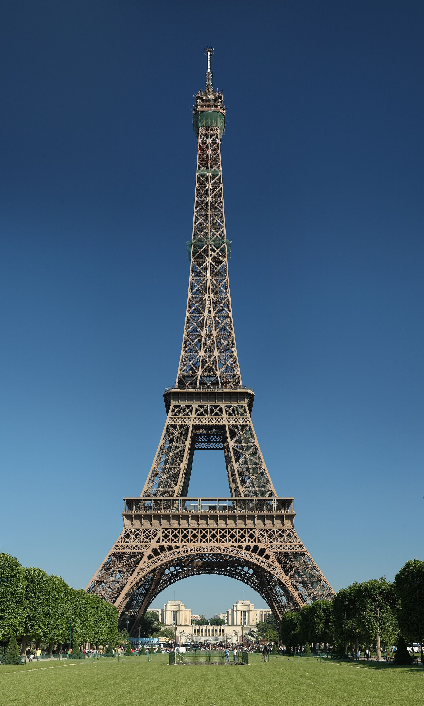
O roteiro completo do Luiz & Renata pela Europa — ritmo leve, arquitetura e história, com a escala-bônus de um dia em Amsterdam na ida. Tudo pesquisado com preços reais.
Vocês entram e saem da Europa por Viena (voo LATAM via Amsterdam). A sequência foi montada para gastar pouco tempo em deslocamento, respeitar o compromisso obrigatório em Barcelona (2 e 3 de outubro) e manter um ritmo tranquilo.
IDA · dom 20 set
VOLTA · ter 06 out
Equilíbrio entre custo e tempo: trem onde ele é tão barato quanto avião e leva centro-a-centro; voo low-cost onde o trem seria longo demais. Preços para o casal, comprando com antecedência. Os preços de avião abaixo já incluem 1 mala despachada por pessoa (low-cost cobram à parte; no trem e no TGV a mala é grátis). ⚠️ Seu status LATAM Pass Black não isenta mala nesses voos europeus (Vueling/Transavia/Austrian/Ryanair) — só valeria em metal Iberia (via Madri, não compensa). Por isso a mala paga já está no preço.
RegioJet (ônibus, 4h45) 07:45→12:30 = €9,90/pessoa, 1 mala despachada grátis (visto ao vivo 29/06). Trem ÖBB Railjet (~4h, Wien Hbf→Praha hl.n., mais conforto, mala grátis) desde €14,90/pessoa. Compre já — sobe com a procura.
Transavia 06:40→08:35 PRG→Orly (direto, 1h55): tarifa €74 + mala despachada (~€40 — oficial Transavia €30–45) = ~€114/pessoa (tarifa vista ao vivo 29/06). Mais tarde: Smartwings 12:20→14:15 (CDG) €102+mala. Trem inviável (~14h); evite Ryanair (Beauvais longe).
TGV INOUI direto, 3/dia: 06:42, 07:42, 14:42 (~6h49). Pegue o de 07:42 (chega 14:32). Piso real €49/pessoa (extraído do Trainline) · Prem’s antecipada desde €39. A cotação ao vivo por data é bloqueada por captcha (DataDome) em Trainline/SNCF/Omio/RailEurope — então reserve no SNCF Connect/Trainline assim que abrir outubro p/ travar €39–69 (sobe perto da data; pode chegar a €99 em pico). Malas grátis no TGV. Vale mais que voar (centro a centro).
Sai do Terminal 1. Recomendado: Vueling 11:35→14:05 = €58/pessoa + mala (~€35) = ~€93/pessoa — meio-dia, chega Viena 14:05 com folga p/ o voo de 06/out. Alternativas no dia 05: Ryanair 19:10 €62, Austrian 20:40 €86. Tarifas vistas ao vivo 29/06.
Sua conexão na ida tem 9h15 em Amsterdam (chega 10:50, parte 20:05). Dá tempo de sobra para um meio-dia na cidade. Como brasileiros não precisam de visto, vocês passam pela imigração no Schiphol e saem normalmente.
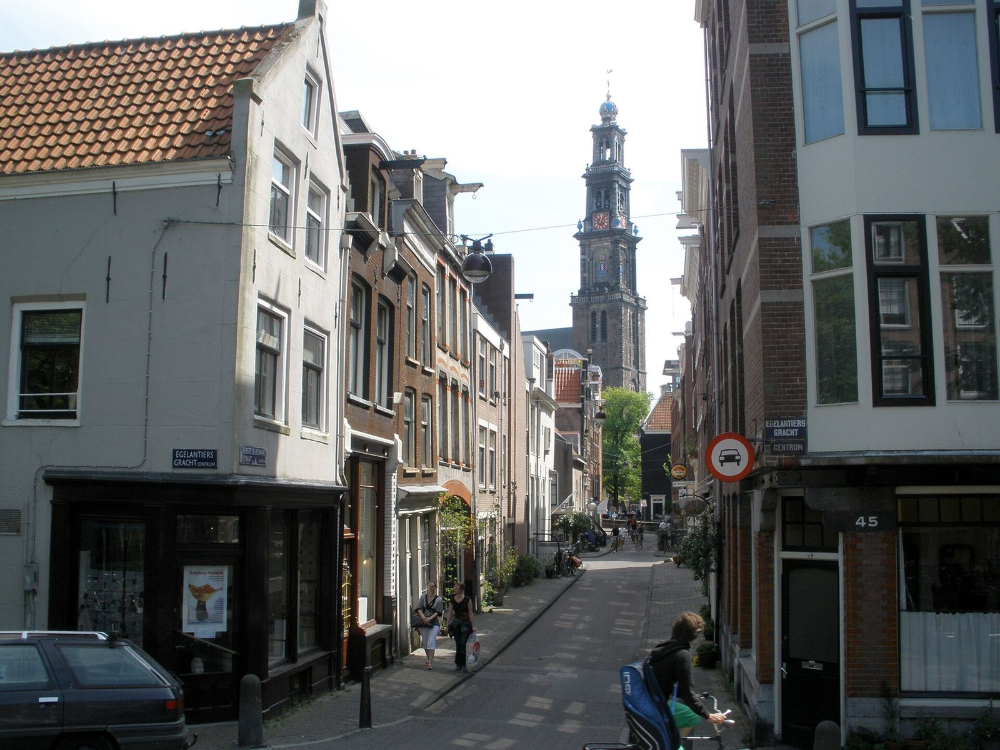
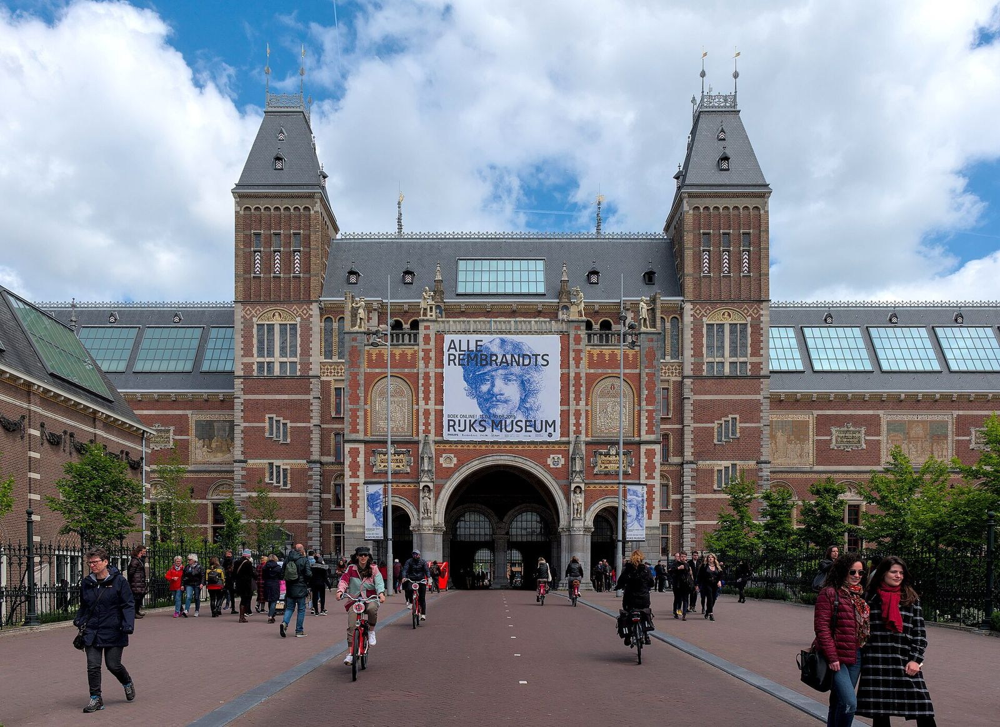
Cansados do voo? Tudo bem ficar no aeroporto (tem lounges). Se o GRU→AMS atrasar, faça só os canais + Jordaan, sem museu — a margem para o voo é prioridade.
Porta de entrada e saída da viagem. Vocês ficam 3 noites na chegada (21–24 set) e voltam para 1 noite no fim (5–6 out) antes do voo. A dica é reservar o mesmo hotel nos dois períodos: simplifica e dá pra deixar bagagem.
Preço real consultado em 29/06. Na volta (5–6 out, 1 noite): ~€106.
Riess City Rooms · 8.5 · 3.279 avals · ~€124/noite
Urban Rooms Rathaus · 8.8 · 2.231 avals · ~€142/noite
The Cloud One Wien-Staatsoper · 8.4 · 7.735 avals · em cima da Ópera · ~€144/noite
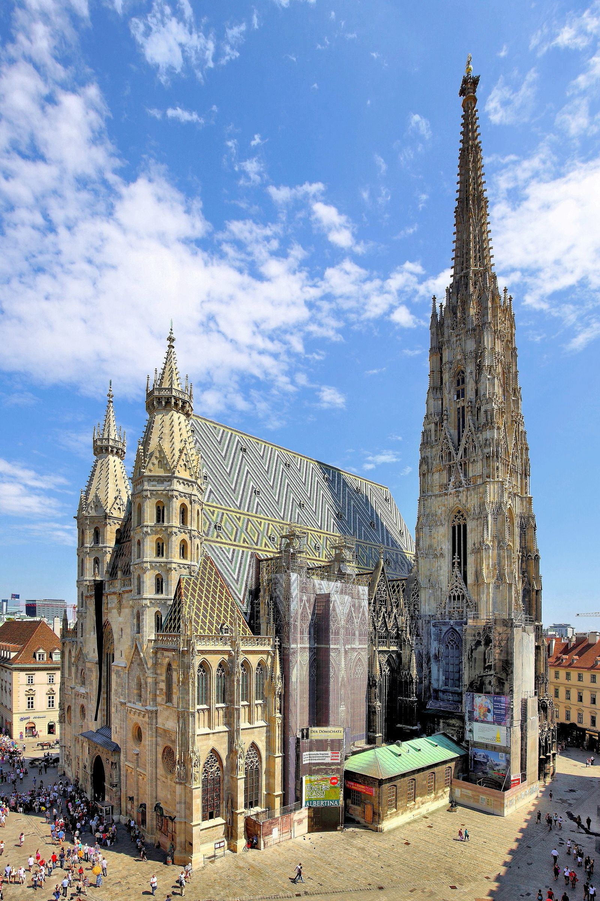
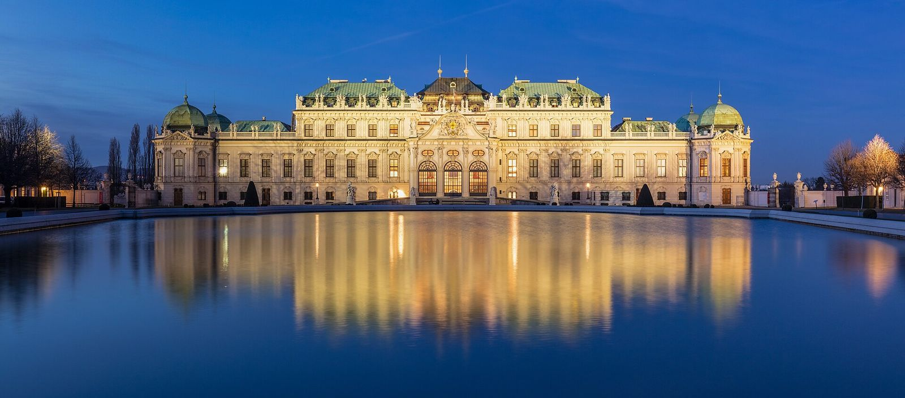
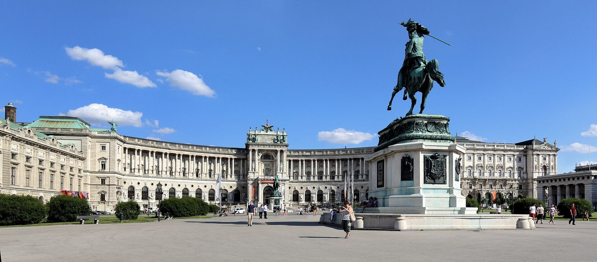
Chegam de trem na tarde de quinta. O centro histórico (Stare Mesto, Mala Strana) faz-se quase tudo a pé — perfeito para o ritmo leve. ~2,5 dias para os ícones.
Preço real consultado em 29/06.
Narodni Stay · 8.2 · 6.024 avals · 0,6 km do centro · ~€87/noite
Hotel Bologna · 8.5 · 10.526 avals · 0,6 km · ~€136/noite
Hotel Certovka · 9.0 · 1.851 avals · à beira do rio · ~€125/noite
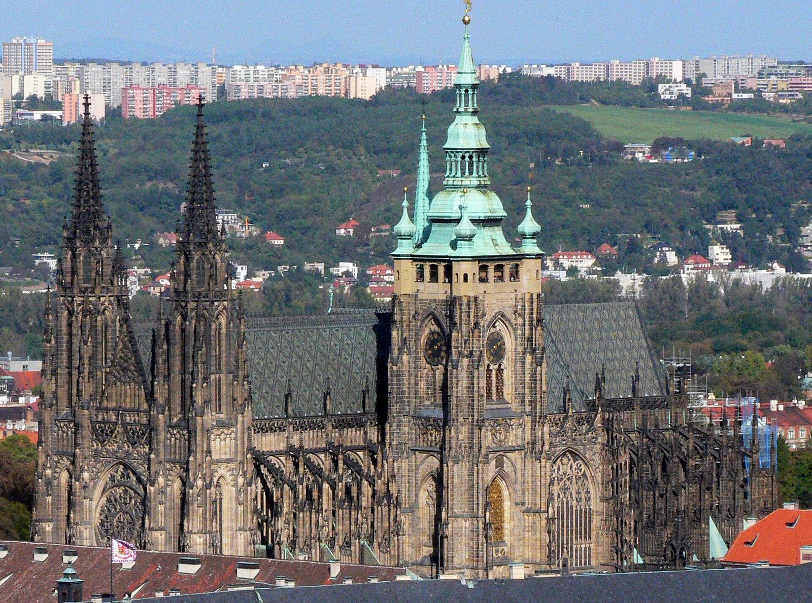
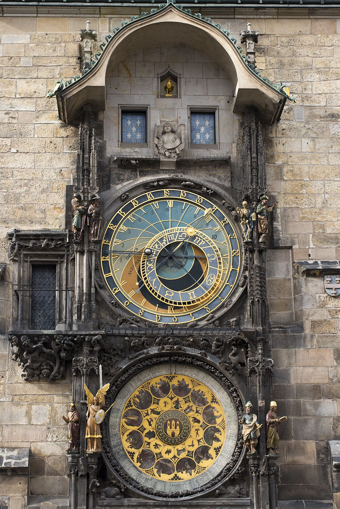
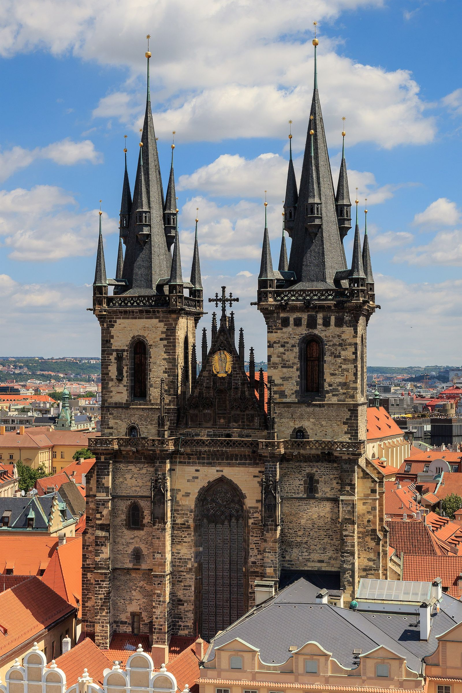
O maior bloco da viagem: ~3,5 dias. A chave aqui é o calendário dos museus — o Louvre fecha terça e o Orsay fecha segunda. O roteiro já está montado para encaixar tudo certo.
Preço real consultado em 29/06. Paris não tem central com muitas avaliações abaixo disso.
Hôtel Bellevue et du Chariot d'Or · 8.0 · 4.637 avals · ~€190/noite
The People - Paris Marais · 8.1 · 9.295 avals · design · ~€291/noite
Pra economizar: aceitando ~3 km do centro, há opções a partir de ~€90/noite (menos avaliações).
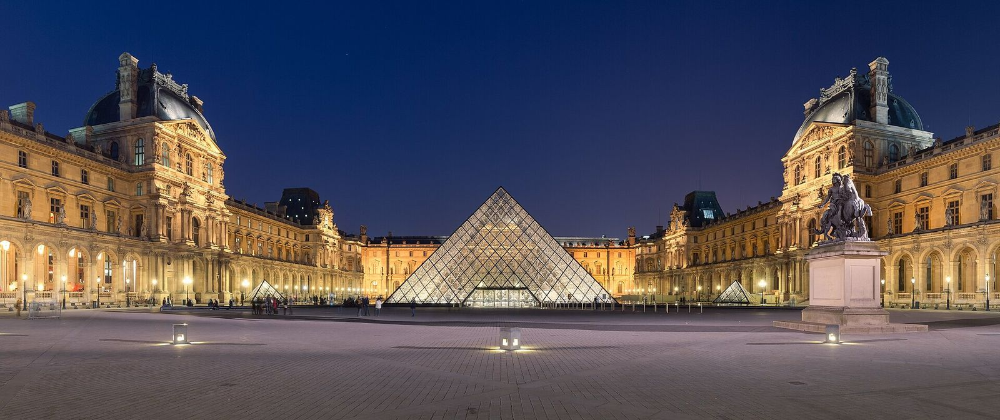
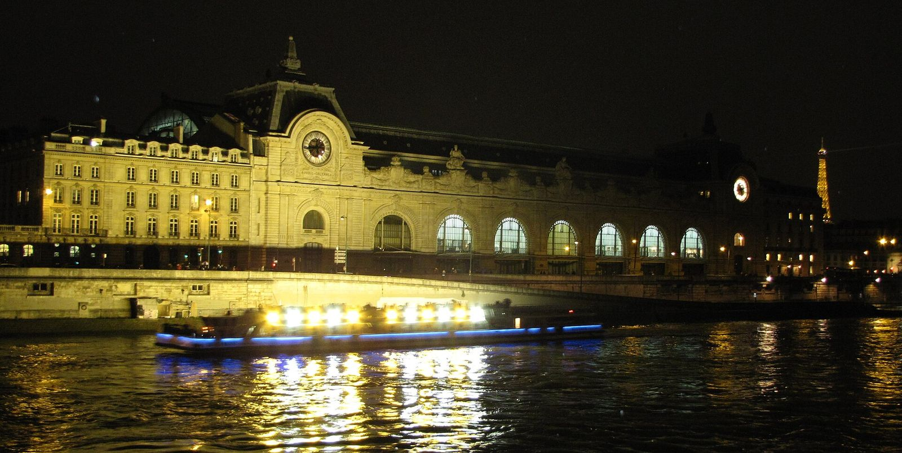
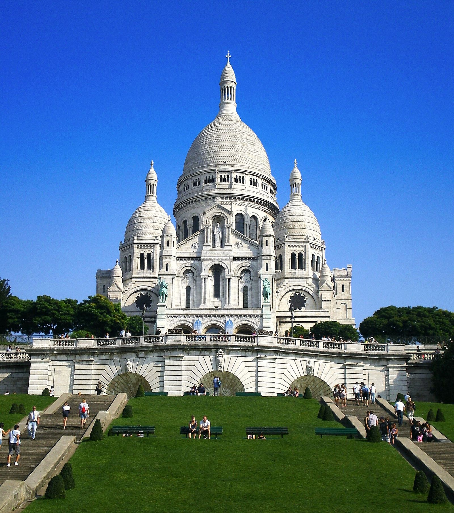
Aqui é o ponto fixo: vocês têm que estar em Barcelona dias 2 e 3 de outubro (compromisso). Por isso reservei 4 noites aqui: o turismo se concentra na tarde de 1/out e no dia 4/out (livre, após o compromisso); as noites de 2 e 3 também ficam livres. Roteiro flexível de propósito.
Preço real consultado em 29/06 (out é alta em BCN). Quer gastar menos? Com 3 noites (sair dia 04) o hotel cai ~€175 — mas o voo BCN→Viena do dia 04 fica mais caro (Vueling meio-dia ~€144 vs €58 no dia 05), então quase empata. A 4ª noite acaba saindo quase "de graça" e te dá o dia 04 livre. Quer hotel melhor? Veja as alternativas.
HCC Montblanc · 8.8 · 1.736 avals · Gótico · ~€194/noite
Catalonia Avinyó · 8.6 · 3.759 avals · Gótico · ~€195/noite
Hotel Rialto · 8.7 · 4.107 avals · centro · ~€216/noite
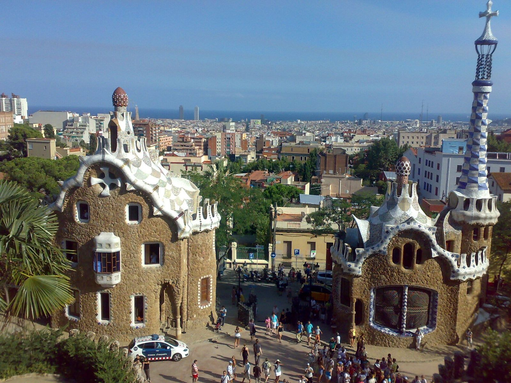
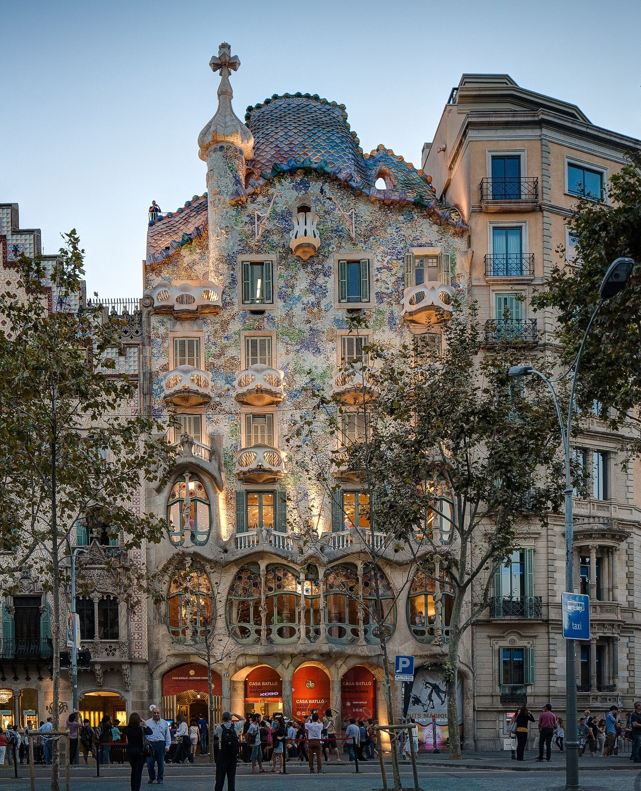
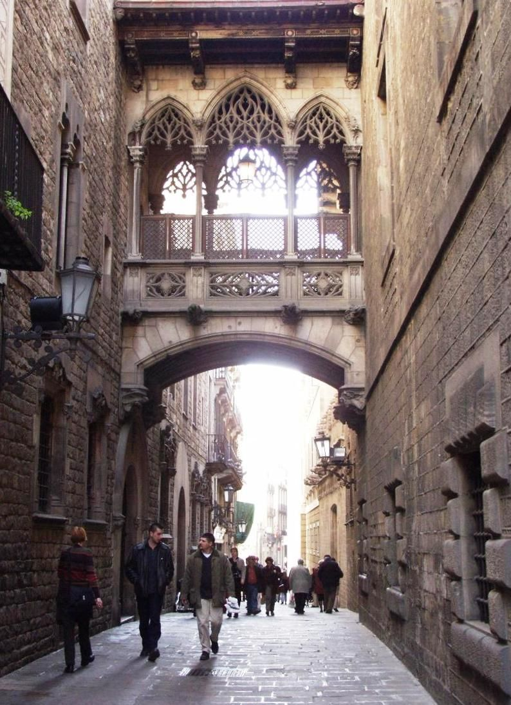
Estimativa para os 2, fora as passagens internacionais (já pagas na LATAM). Câmbio €1 = R$5,90. "Econômico" = opções mais baratas; "Conforto" = hotéis 3★/4★ centrais e fazer tudo.
| Item | Econômico | Conforto |
|---|---|---|
| 🏨 Hospedagem (15 noites) | €1.984R$ 11.706 | €3.000R$ 17.700 |
| 🚆 Transporte entre cidades | €560R$ 3.304 | €720R$ 4.248 |
| 🍽️ Alimentação (16 dias) | €880R$ 5.192 | €1.150R$ 6.785 |
| 🚇 Transporte local + traslados | €200R$ 1.180 | €260R$ 1.534 |
| 🎟️ Atrações e ingressos | €650R$ 3.835 | €870R$ 5.133 |
| 📱 eSIM + extras | €60R$ 354 | €90R$ 531 |
| Total do casal | ≈ €4.334R$ 25.571 | ≈ €6.090R$ 35.931 |
Por pessoa: ~€2.170 (econômico) a ~€3.045 (conforto). Hotéis e tarifas de voo foram conferidos ao vivo nas suas datas (Booking, Google Flights, API RegioJet/Ryanair); os voos já contam 1 mala despachada por pessoa. Reserve cedo: out em Barcelona e fim de set em Paris são alta temporada.
Melhor custo-benefício: Saily (da NordVPN) — cobre Áustria, Chéquia, França, Espanha e Holanda. Plano 10GB/30 dias ~€33. Alternativa: Airalo Eurolink (5GB ~€17,50). Compre e instale antes de viajar; ativa ao chegar.
O Black Signature só dá mala grátis/prioridade em metal LATAM, Delta e Iberia (parceria nova de 2026). Nos voos europeus daqui (Vueling/Transavia/Austrian/Ryanair) não vale — a mala paga já está nos preços. Única exceção: voar Iberia (BCN→Madri→Viena), mas a conexão extra não compensa o frete da mala.
Brasileiros entram sem visto. O ETIAS só começa no fim de 2026 e fica obrigatório ~2027 — quase certamente não será exigido em set/2026. Leve o passaporte com validade folgada; ele também garante a tarifa de museu (mesmo sendo não-EEE).
Áustria/França/Espanha = euro; Chéquia = coroa (CZK). Sempre pague/saque na moeda local (recuse "cobrar em reais" — é taxa escondida). Cartão Wise/Revolut é o ideal. Evite casas de câmbio de rua e ATMs "Euronet".
Não vale adicionar uma 5ª cidade-base — quebra o ritmo leve. Se quiserem um passeio extra: Bratislava (1h de trem de Viena, €19 ida-volta) no dia 5/out, ou Kutná Hora (50 min de Praga) no dia 26/set. Amsterdam já é o "bônus" na escala.